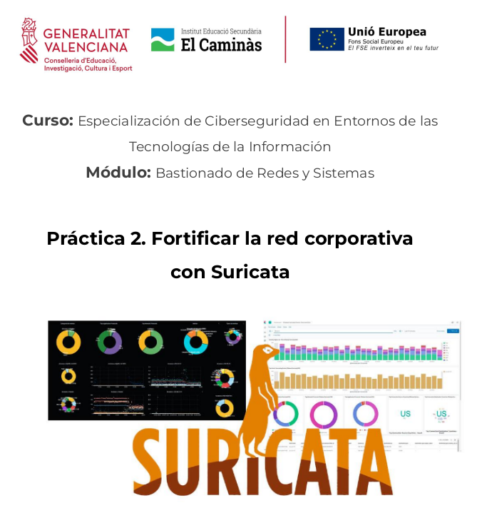

UT8. Fortificación de la red corporativa: IDS-IPS
- UT8. Fortificación de la red corporativa: IDS-IPS
- Objetivos
- 1. Herramientas de monitorización
- 2. Sistemas de prevención y protección frente a intrusiones
- 3. SIEMs (Gestores de Eventos e Información de Seguridad)
- 3.1 Elastic Stack (Open Source)
- 3.1.1 Escenario y software necesario
- 3.1.2 Instalación y configuración de Elasticsearch
- 3.1.3 Instalación y configuración de Kibana Dashboard
- 3.1.4 Instalar y configurar Logstash
- 3.1.5 Instalar y configurar Filebeat
- Laboratorio 2. Filtro Apache y conexiones ssh
- 3.1.6 Panel Kibana
- 3.1.7 Integración de sistemas y aplicaciones en Elastic Stack
- 3.1.8 Problemas y soluciones
- Laboratorio 3. Detección de Ataques DoS con Elastic Stack y Suricata
- Proyecto. Despliegue de un SIEM en la red corporativa
- 3.2 Microsoft Sentinel
- 3.3 Splunk
- 3.1 Elastic Stack (Open Source)
- 4. Prevención de fugas de información (DLP, Data Loss Prevention)
- 5. Seguridad del correo electrónico
- 6. Referencias
Práctica 2. Fortificar la red corporativa con Suricata

Obra publicada con Licencia Creative Commons Reconocimiento No comercial Compartir igual 4.0